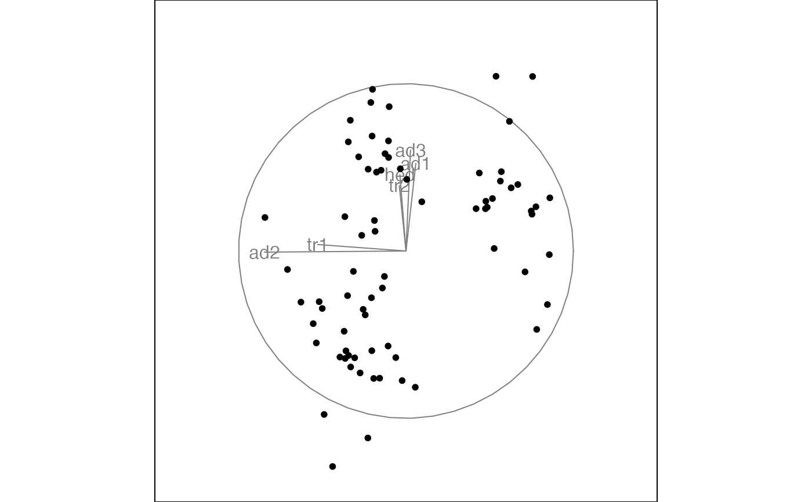
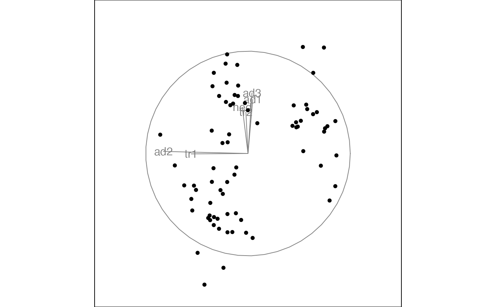

Search very locally to find slightly better projections to polish a broader search.
Source:R/search_polish.r
search_polish.RdSearch very locally to find slightly better projections to polish a broader search.
Usage
search_polish(
current,
alpha = 0.5,
index,
tries,
polish_max_tries = 30,
cur_index = NA,
n_sample = 100,
polish_cooling = 1,
...
)Arguments
- current
the current projection basis
- alpha
the angle used to search the target basis from the current basis
- index
index function
- tries
the counter of the outer loop of the opotimiser
- polish_max_tries
maximum number of iteration before giving up
- cur_index
the index value of the current basis
- n_sample
number of samples to generate
- polish_cooling
percentage of reduction in polish_alpha when no better basis is found
- ...
other arguments being passed into the
search_polish()
Examples
data(t1)
best_proj <- t1[, , dim(t1)[3]]
attr(best_proj, "data") <- NULL
best_proj <- unclass(drop(best_proj))
animate_xy(
flea[, 1:6],
guided_tour(holes()),
search_f = search_polish(
polish_max_tries = 5),
start = best_proj
)
#> Converting input data to the required matrix format.
#> Target: 1.253, 0.8% better
#> Using half_range 4.4

